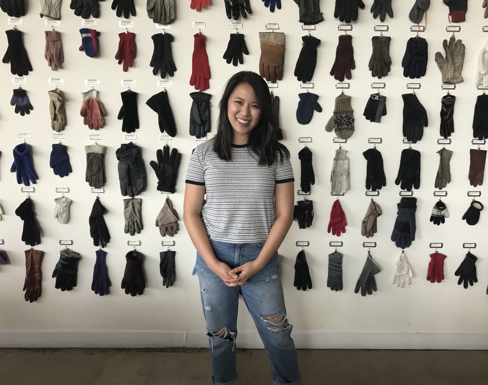

 Rika Ko is a designer and engineer who loves creative, hands-on projects. She is currently a senior at Northwestern University, studying a self-created major in the McCormick School of Engineering: Human-Centered Product Design and Development. This major is designed around the product cycle, specifically the portion from brainstorm and ideation to development and hand-off into manufacturing.
Her three internships at Glossier, OXO, and Tesla have created an extremely unique set of skills and experiences. In three vastly different industries, I've stayed true to working directly with products.